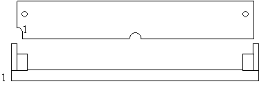

Previous
Next
TOC
Die MAGNUM Karte für den Falcon030 von Aixit
Diese Karte wird in den Expansion Slot des Falcon030 gesetzt nach-
dem ein 4 oder 8MB großes
PS/2 SIMM-Module (
2K- oder 4K-Refresh),
einseitig oder doppelseitig bestückte) eingesetzt worden ist.
Der Expansionport kann nachträglich durchgeschleift werden (die
Bohrungen sind vorhanden) um weitere Erweiterungen einzubauen bzw.
anzuschliessen. Ein 50 MHz Quarzoszillator kann optional nachgerüs-
tet werden, damit entfällt dann der externe Screenblaster am Fal-
con030. Es kann Probleme mit CPU-Beschleunigern geben falls für den
Zugriff auf die Hardware des Computers nicht rechtzeitig der erhöh-
te Takt zurückgeschaltet wird. Die maximale Geschwindigkeit wird
dadurch erreicht, daß auf die MAGNUM Karte im asynchronen Modus zu-
gegriffen wird, bei erhöhten Takt (20Mhz) müssen die RAM-Chips auf
dem SIMM eine Zugriffszeit von 70 Nanosekunden oder schneller haben.
Die Ausrichtung des PS/2 SIM-Modules auf der Magnum Karte:

Weiterhin ist die möglichkeit der Zusammenarbeit mit der NOVA-Gra-
fikkarte möglich. Hierbei wird über die mitgelieferte Software der
Speicherausbau auf 12MB um 2MB auf 10MB begrenzt um Platz im Adress-
raum der 68LC030 CPU des Falcon030 zu schaffen (die 68LC030 ist eine
abgespeckte 68030 CPU die lediglich INTERN 32Bit breit arbeitet, je-
doch auf die externe Hardware nur mit einem 16Bit Bus wie eine
68000er CPU arbeitet).
Die korrekte Belegung der ID-Bits am PS/2 Modul (nach JEDEC)
Die meisten PC-Mainboards werten die ID-Bits nicht aus, daher sind
die oft auf PS/2-SIMMs nicht oder falsch 'gejumpert' (meistens sind
die als 0 Ohm-SMD-Widerstände ausgeführt):
PD1 (67)
PD2 (68)
(In Klammern Pinnummer am PS/2-SIMM)
--------------------------
4MB
Ground
Ground
8MB
offen
offen
16MB
Ground
offen
32MB
offen
Ground
Ansonsten kann es noch sein, daß Du SIMMs mit 4k-
Refresh
(also Rows != Columns) hast, die werden nicht von allen Chipsätzen
unterstützt, dies macht aber bei der Magnum keine Probleme.
Kapitel Die MAGNUM Karte für den Falcon030 von Aixit, Seite 1